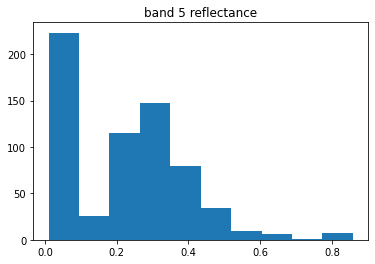

9.3. Landast part 2: rasterio¶
This notebook reads in the red, and near-ir bands from a landsat 8 image and calculates the ndvi, defined as
\[ndvi = (nir - red)/(nir + red)\]
where nir and red are the respective spectral directional reflectances.
import pprint
from pathlib import Path
import numpy as np
import rasterio
from matplotlib import pyplot as plt
from pathlib import Path
import a301_lib
******************************
context imported. Front of path:
/home/phil/work
9.4. Get the vancouver image¶
landsat_dir = Path() / "landsat_scenes"
b4_file = list(landsat_dir.glob("**/*B4.TIF"))[0]
b5_file = list(landsat_dir.glob("**/*B5.TIF"))[0]
mtl_file = list(landsat_dir.glob("**/*MTL.txt"))[0]
print(b4_file,b5_file,mtl_file)
landsat_scenes/LC08_L1TP_047026_20150614_20180131_01_T1/LC08_L1TP_047026_20150614_20180131_01_T1_B4.TIF landsat_scenes/LC08_L1TP_047026_20150614_20180131_01_T1/LC08_L1TP_047026_20150614_20180131_01_T1_B5.TIF landsat_scenes/LC08_L1TP_047026_20150614_20180131_01_T1/LC08_L1TP_047026_20150614_20180131_01_T1_MTL.txt
9.5. Read in the bands 4 (red) and 5 (near infrared)¶
Note that rasterio is a pretty complicated object with a lot of functionality.
The full documentation is at https://rasterio.readthedocs.io/en/latest/
with rasterio.open(b4_file) as b4_raster:
b4_data = b4_raster.read(1)
with rasterio.open(b5_file) as b5_raster:
b5_data = b5_raster.read(1)
print(b4_data.shape,b5_data.shape)
print(b4_data[:1000,:1000])
(7961, 7851) (7961, 7851)
[[0 0 0 ... 0 0 0]
[0 0 0 ... 0 0 0]
[0 0 0 ... 0 0 0]
...
[0 0 0 ... 0 0 0]
[0 0 0 ... 0 0 0]
[0 0 0 ... 0 0 0]]
9.6. Find the toa reflectance for each channel¶
Use toa_reflectance_8 to turn band counts into reflectance.
from sat_lib.landsat.toa_reflectance import toa_reflectance_8, landsat_metadata
meta=landsat_metadata(mtl_file)
out = toa_reflectance_8([4, 5], mtl_file)
print(meta)
in sat_lib init
Scene LC80470262015165LGN02 center time is 2015-06-14 19:00:43
Scene LC80470262015165LGN02 center time is 2015-06-14 19:00:43
<sat_lib.landsat.landsat_metadata.landsat_metadata object at 0x7fdf058bed00>
9.7. Silence annoying warnings from numpy¶
np.seterr(divide="ignore", invalid="ignore")
{'divide': 'warn', 'over': 'warn', 'under': 'ignore', 'invalid': 'warn'}
9.8. NIR is much more reflective than red¶
out[5]
array([[nan, nan, nan, ..., nan, nan, nan],
[nan, nan, nan, ..., nan, nan, nan],
[nan, nan, nan, ..., nan, nan, nan],
...,
[nan, nan, nan, ..., nan, nan, nan],
[nan, nan, nan, ..., nan, nan, nan],
[nan, nan, nan, ..., nan, nan, nan]], dtype=float32)
flat_5 = out[5].ravel()
subset = np.random.randint(0, high=len(flat_5), size=1000, dtype='l')
hit = (flat_5[subset] < 1.2) & (flat_5[subset] > 0)
plt.hist(flat_5[subset][hit])
plt.title("band 5 reflectance");

flat_4 = out[4].ravel()
hit = (flat_4[subset] < 1.2) & (flat_4[subset] > 0)
plt.hist(flat_4[subset][hit])
plt.title("band 4 reflectance");
9.9. Calculate the ndvi¶
ndvi = (out[5] - out[4]) / (out[5] + out[4])
ndvi_flat = ndvi.ravel()
hit = (ndvi_flat[subset] < 1.0) & (ndvi_flat[subset] > -1)
plt.hist(ndvi_flat[subset][hit])
plt.title("ndvi")
Text(0.5, 1.0, 'ndvi')
9.10. Does the reflectance step matter?¶
Check to see if you histograms look different when you do the ndvi with raw counts instead of reflectance.